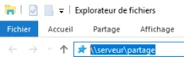
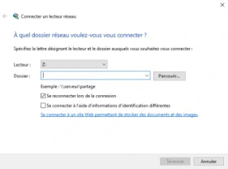
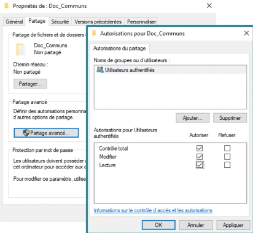
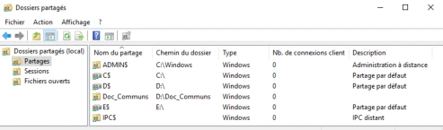
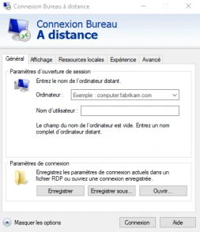
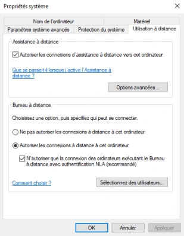
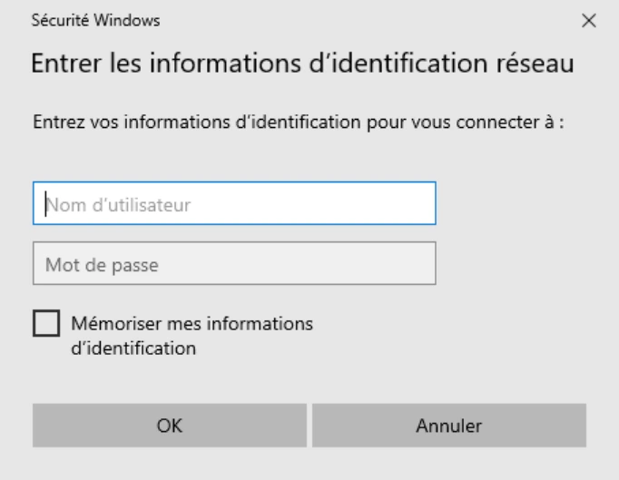
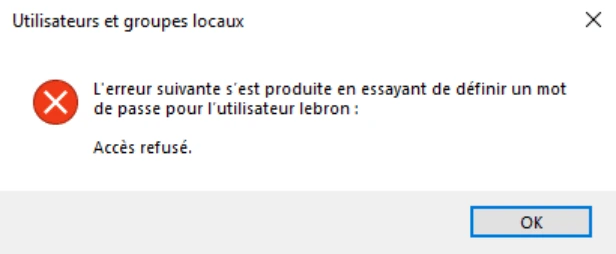

Module 08 — Le partage de ressources¶
La transcription du support Drive et l’aide pédagogique sont séparées pour rendre leur provenance explicite.
SOURCE DRIVE · TRANSCRIPTION DU SUPPORT
Le contenu des documents du dossier TSSR est transcrit ci-dessous, page par page. Les textes et tableaux sont intégrés à la page Web. Aucun fichier PDF, aucune diapositive entière ni aucune reproduction de page n’est affiché. Seuls des croquis ou visuels isolés et vérifiés peuvent accompagner la transcription. Les versions et les consignes restent celles des supports de formation. Les compléments IA sont conservés dans leur onglet distinct.
Support · Module 08 - Support de cours · 8 pages transcrites
Systèmes clients Microsoft
Module 08 – Le partage de ressources
Objectifs
- Utiliser le réseau pour accéder aux informations de l’entreprise
- Accéder aux documents via des partages
- Accéder aux ordinateurs grâce au bureau à distance
Partages
Les principes du partage
- Permet d'accéder à une ressource
- hébergée par un serveur
- depuis un client
- à travers le réseau
RÉSEAU
Partages
- Les ressources ?
- Des fichiers (via le partage de dossier, d'arborescence entière ou de volume)
- Des imprimantes
- Les serveurs ?
- Tout type de système connecté au réseau de l'entreprise peut potentiellement partager ses ressources
- Serveur, poste client fixe ou portable, copieur, tablette, Smartphone…
- Les clients ?
- Tout type de système connecté au réseau peut accéder aux ressources partagées de l'entreprise
- Serveur, poste client fixe ou portable, copieur, tablette, Smartphone…
Partages
- Qui peut partager ?
- Des droits administratifs sont requis ! Partager, c'est modifier le système !
- Qui a accès au partage ?
- Une authentification est requise (compte local, du domaine)
- 3 niveaux d'accès sont définis sur la ressource partagée
- Lecture, Modifier, Contrôle total
- 2 vérifications d'identités sont effectuées
- 1 – Au niveau du partage
- 2 – Puis au niveau des droits NTFS
- Les autorisations du partage sont restrictives
RÉSEAU
Partage de fichiers
Comment accéder aux fichiers partagés depuis Windows 10 ?
- De façon momentanée, depuis l'explorateur avec le chemin UNC \\serveur\partage
- Durablement, avec la fonctionnalité Connecter un lecteur réseau
- Les lecteurs mappés sont mémorisés avec le profil utilisateur
- En ligne de commande avec net use
- Exemple net use z: \\serveur\partage
- La commande net view liste les partages
- En PowerShell avec la cmdlet New-SmbMapping
- Exemple New-SmbMapping -LocalPath 'R:' -RemotePath '\\SRV-FIC\Compta'




Partage de fichiers
Comment partager des fichiers ?
- Depuis l'explorateur Windows
- Ouverture du partage sur le conteneur
- Partage de base : partage simplifié orienté utilisateur (à éviter)
- Partage avancé : onglet Partage depuis les propriétés du conteneur
- Par défaut, l'entité Tout le monde est en Lecture
- Bonne pratique : préférez l'entité de sécurité Utilisateurs Authentifiés
Partage de fichiers
- Depuis le composant MMC Dossiers partagés (fsmgmt.msc)
- Visualisation des partages actifs
- Assistant de création de partages
- Vues Sessions et Fichiers ouverts
- Affichage des partages administratifs générés par le système
- Depuis l'invite de commande
- net share pour lister et configurer les partages
- Exemple : net share commun=d:\Note_de_service /grant:"utilisateurs authentifiés",FULL
- En PowerShell avec la cmdlet New-SmbShare
- New-SmbShare -Name "VMSFiles" -Path "C:\ClusterStorage\Volume1\VMFiles" -FullAccess "Authenticated Users"




Démonstration
Session à distance
- Accès distant au poste
- Possible grâce à la fonctionnalité Bureau à distance
- Authentification avec un compte valide (local ou de domaine)
- Nécessite des privilèges spécifiques
- Même niveau de fonctionnement qu'une session locale
- Utilisation courante
- Maintenir des postes (1 seule session locale ou distante)
- Accéder à distance aux serveurs (2 sessions simultanées depuis Windows 2008)
- Accéder à son environnement de travail depuis l'extérieur (VPN)
- Les limites
- Mode maintenance sur un poste client (pas d'interaction possible avec l'utilisateur)
- Sur les serveurs, 2 sessions avec des comptes différents
- Blocage (à distance) si les sessions restent ouvertes
Session à distance
- Comment se connecter à distance sur un poste Windows 10 ?
- Nativement, avec l'outil Connexion Bureau à distance
- Ensemble d'onglets pour personnaliser la connexion
- Sauvegarder les paramètres
- Mappez vos ressources locales sur le poste distant !
- En ligne de commande avec mstsc
- Exemple : mstsc /v:serveur
Session à distance
Configuration du poste cible ?
- Rubrique Système du panneau de configuration
- Menu Paramètres système avancés
- Onglet Utilisation à distance
- Nativement désactivé
- 2 niveaux d'authentification
- Authentification standard
- Authentification NLA
- Par défaut, accès autorisé aux administrateurs
Fonctionnement
- Protocole RDP (port 3389)
- Configuration automatique du pare-feu
- Attention aux emplacements réseau




Démonstration
TP
Conclusion
- Les réseaux sont les fondations des systèmes d’informations des entreprises.
- Les systèmes d’exploitation tirent profit du réseau pour organiser et sécuriser l’accès aux informations
Référence du document : 1behcnzxdajFM0y3ydZ7w_ggzyePbJz24 · SHA-256 313d40d1e9005ae9…
Énoncé · Enonc‚ du TP - Partages et sessions distantes · 3 pages transcrites
Systèmes Clients Microsoft Partages et sessions distantes
TP du Module 08 – Le partage de ressources
Lors de ce TP, vous serez amené à partager des dossiers de votre VM Windows 10. Vous tenterez d'y accéder via le réseau depuis votre seconde VM. Vous étudierez la configuration de votre seconde VM et vous ferez en sorte d'y ouvrir une session à distance depuis votre VM Windows 10. Mais avant tout, assurez-vous d'abord que ces deux VM communiquent bien entre elles.
Durée estimée
1 heure
Énoncé
Lisez l'ensemble de ce TP avant de vous lancer dans la pratique
Sur votre VM Win10-XX, partagez les ressources suivantes :
- Partagez le dossier Echange disponible sur le lecteur D:
Vous utilisez les bonnes pratiques Microsoft
- Le partage se nommera CoWorkerShare
- Permettez à vos collègues la possibilité de modifier le contenu du dossier depuis leurs VM
Vous testerez le bon fonctionnement
- Pour faciliter l'usage des logiciels de l'entreprise, l'équipe informatique décide de partager le dossier "manuels d'utilisation". Les utilisateurs auront la possibilité d'y déposer des documents texte et des images (comme des captures d'écran) dans le
but d'enrichir une future FAQ.
Vous êtes en charge de créer le partage. Vous testerez les accès avec un compte
d’utilisateur membre du groupe L_Collegues.
Sur Discovery
- À l'aide de PowerShell et des bonnes cmdlets, lister les partages disponibles sur la VM.
- Toujours à l'aide de PowerShell, quel dossier de l'arborescence du système est partagé par le nom ADMIN$ ? Qui peut accéder au partage N$ ?
Bureau à distance
- Vérifiez l'état d'activation de la fonctionnalité Bureau à distance disponible sur votre VM Discovery
- Est-elle active ?
- Faites en sorte de permettre aux utilisateurs Géraldine et Laurent d'ouvrir une session Bureau à distance sur la VM Discovery.
- Testez ces accès via votre VM Win10-XX.
- Une fois connectée, Géraldine peut-elle changer le mot de passe de Laurent ? Adm peut-il ouvrir une session bureau à distance sur Discovery ? Peut-il changer le mot de passe de Laurent ? Pourquoi ?
Solution
Une solution est proposée pour ce TP sous la forme d'un PDF commenté, disponible dans les ressources à télécharger.
Référence du document : 12wyExQ4Og5nnWqDusZdLTuJDfy8teXqo · SHA-256 4865d38629b1cc40…
Correction · Solution du TP - Partages et sessions distantes · 6 pages transcrites
Correction originale : à consulter après avoir tenté l’exercice.
Partages et sessions distantes
TP du Module 08 – Le partage de ressources
Proposition de solution
Sur votre VM Win10-XX, partagez les ressources suivantes :
- Partagez le dossier Echange disponible sur le lecteur D:
- Vous utilisez les bonnes pratiques Microsoft
- Le partage se nommera CoWorkerShare
- Permettez à vos collègues la possibilité de modifier le contenu du dossier depuis leurs VM
- Vous testerez le bon fonctionnement
Clic droit sur le dossier Echange disponible sur le lecteur D:
Propriétés
Onglet Partage
Partage avancé
Cochez Partager ce dossier
Nom du partage : CoWorkerShare
Mises en place des bonnes pratiques Microsoft
Autorisations
Supprimer Tout le monde
Ajouter Utilisateurs authentifiés en Contrôle total
Appliquer > OK
Appliquer > OK
Le dossier est maintenant partagé, accessible via le réseau.
Pour permettre à nos collègues d'accéder au contenu du dossier via le partage, il faut consulter/modifier les autorisations d'accès NTFS
Onglet Sécurité du dossier Echange
S'assurer que le groupe L_Collegues possède les autorisations d'accès en Modification
Dans le cas contraire, ajouter le groupe L_Collegues dans la DACL et attribuer les autorisations d'accès en Modification
Pour tester le bon fonctionnement
Ouvrez une session sur la VM Discovery
Ouvrez l'explorateur Windows
Dans la barre de navigation, entrez le chemin UNC correspondant à votre partage
\\@ipWin10-XX\CoWorkerShare
Après quelques secondes, vous êtes challengé.
Seuls les utilisateurs authentifiés connus de la base SAM de Win10-XX peuvent accéder au contenu du partage
Entrer le nom d'utilisateur d'un de vos utilisateurs membre du groupe L_Collegues ainsi que son mot de passe pour avoir accès au contenu du dossier partagé CoWorkerShare en Modification.
Créer un dossier TestPartage pour vérifier le niveau d'accès en Modification.
Fermer la session actuellement ouverte sur Discovery pour regénérer le jeton d'accès.
- Pour faciliter l'usage des logiciels de l'entreprise, l'équipe informatique décide de partager le dossier "manuels d'utilisation". Les utilisateurs auront la possibilité d'y déposer des documents texte et des images (comme des captures d'écran) dans le but


d'enrichir une future FAQ.
Vous êtes en charge de créer le partage. Vous testerez les accès avec un compte d’utilisateur membre du groupe L_Collegues
Les utilisateurs auront la possibilité d'y déposer des documents texte et des images (comme des captures d'écran) dans le but d'enrichir une future FAQ
Les utilisateurs doivent donc avoir un accès en Modification sur le dossier manuels d'utilisation
Clic droit sur le dossier Manuels d'utilisation disponible sur le volume TOOLS
Propriétés
Onglet Sécurité
Modifier
Sélectionner Utilisateurs
Cochez Modification
Appliquer > OK
Ouverture du partage en respectant les bonnes pratiques Microsoft
Onglet Partage
Partage avancé
Cochez Partager ce dossier
Nom du partage : manuels d'utilisation
Autorisations
Supprimer Tout le monde
Ajouter Utilisateurs authentifiés en Contrôle total
Appliquer > OK
Fermer
Le dossier est maintenant partagé, accessible via le réseau.
Pour tester le bon fonctionnement
Ouvrez une session sur la VM Discovery
Ouvrez l'explorateur Windows
Dans la barre de navigation, entrez le chemin UNC correspondant à votre partage
\\@ipWin10-XX\Manuels d'utilisation
Après quelques secondes, vous êtes challengé.
Seuls les utilisateurs authentifiés connus de la base SAM de Win10-XX peuvent accéder au contenu du partage
Entrer le nom d'utilisateur d'un de vos utilisateurs membre du groupe L_Collegues ainsi que son mot de passe pour avoir accès au contenu du dossier partagé manuels d'utilisation en Modification.
Créer un dossier TestManuelsUtil pour vérifier le niveau d'accès en Modification.
Fermer la session actuellement ouverte sur Discovery pour regénérer le jeton d'accès.
Sur Discovery
- À l'aide de PowerShell et des bonnes cmdlets, lister les partages disponibles sur la VM.
Get-SMBShareOu
Get-FileShare mais peut-être un peu moins parlant comme cmdlet.- Toujours à l'aide de PowerShell, quel dossier de l'arborescence du système est partagé par le nom ADMIN$ ? Qui peut accéder au partage N$ ?
Get-SMBShare ADMIN$
Le partage ADMIN$ permet d'accéder au contenu du dossier C:\Windows de Discovery (valeur de la propriété Path). C'est un partage administratif natif
Get-SMBShareAccess N$Les membres du groupe Administrateurs, Opérateurs de sauvegarde et l'entité de sécurité INTERACTIF ont un accès en Contrôle total
Bureau à distance
- Vérifiez l'état d'activation de la fonctionnalité Bureau à distance disponible sur votre VM Discovery
- Est-elle active ?
Rechercher > sysdm.cpl
Onglet Utilisation à distance
Par défaut, la fonctionnalité Bureau à distance n'est pas active.
- Faites en sorte de permettre aux utilisateurs Géraldine et Laurent d'ouvrir une session Bureau à distance sur la VM Discovery
- Testez ces accès via votre VM Win10-XX
Sélectionner des utilisateurs…
Ajouter…
Giannis;Lebron
OK
Cocher Autoriser les connexions à distance à cet ordinateur
Appliquer > OK
Sur Win10-XX
Rechercher > Connexion Bureau à distance
Ordinateur : @ip de Discovery
Lorsque vous êtes challengé, indiquer les login/mot de passe de Géraldine
Login : giannis
Mot de passe : Pa$$w0rd
OK
Lors de la première connexion, un échange de certificat est effectué.
Cliquez sur Oui
Le bureau à distance s'ouvre, vous avez accès à la VM Discovery.
Pour accéder au bureau, fermez éventuellement la session en cours sur Discovery.
- Une fois connectée, Géraldine peut-elle changer le mot de passe de Laurent ? Adm peut-il ouvrir une session bureau à distance sur Discovery ? Peut-il changer le mot de passe de Laurent ? Pourquoi ?
Rechercher > lusrmgr.msc
Nœud Utilisateurs
Clic droit sur Lebron
Définir le mot de passe…
Continuer
Insérer puis confirmer un nouveau mot de passe pour Laurent EBRON
OK
Géraldine ne peut pas changer le mot de passe de Laurent car seuls les membres du groupe Administrateurs peuvent faire cette action.
Fermer la session de Géraldine et ouvrir une nouvelle session à distance avec le compte adm.
adm peut ouvrir une session à distance car par défaut, tout utilisateur membre du groupe prédéfini Administrateurs peut ouvrir une session à distance.
Tenter de changer le mot de passe de Laurent
C'est possible car l'utilisateur adm fait partie du groupe prédéfini Administrateurs
Fermez la session à distance (clic droit sur le menu Démarrer > Arrêter ou se déconnecter > Se déconnecter)


Référence du document : 1yrnBvdMj6n0hs55r8oUkc1Y_R0j7mS6U · SHA-256 dd6b14bf0535849c…
Complément IA / externe au cours — fiche pédagogique du portail
Cette fiche contient une reformulation et des aides d’apprentissage rédigées par IA. Elle est distincte de la transcription des documents du Drive et ne la remplace pas. Les schémas de synthèse de cette fiche sont des illustrations IA / externes au cours, sauf les captures explicitement attribuées à un document source.
Séquence : Systèmes clients Microsoft
Fil conducteur : rendre une ressource accessible par le réseau, contrôler ses permissions et distinguer accès aux fichiers et session distante.
Objectifs¶
- Identifier le serveur, le client et la ressource dans une situation de partage.
- Accéder aux fichiers par UNC, lecteur réseau, commandes
netet PowerShell. - Configurer les permissions de partage et NTFS puis tester le résultat.
- Préparer et utiliser le Bureau à distance dans le scénario du TP.
1. Les principes du partage¶
Un partage rend une ressource hébergée par un serveur accessible depuis un client, à travers le réseau. La ressource peut être un dossier, une arborescence, un volume ou une imprimante. Les mots serveur et client décrivent ici le rôle joué : un poste fixe ou portable, un serveur, un copieur ou un autre équipement peut fournir ou consommer une ressource selon ses fonctionnalités.
Créer un partage requiert les privilèges administratifs du scénario, car cela modifie le système. Y accéder demande une authentification : compte local connu de la machine hébergeant le partage, ou compte de domaine selon l’environnement.
Illustration IA / externe au cours — contrôles d’un accès distant à un dossier.
Le partage propose Lecture, Modifier et Contrôle total. Une autorisation large au niveau du partage n’efface pas une restriction NTFS : les deux niveaux doivent permettre l’action demandée. Un accès local au dossier et un accès par le réseau ne constituent donc pas le même test.
2. Accéder à des fichiers partagés¶
| Méthode | Exemple du support | Usage |
|---|---|---|
| Chemin UNC dans l’Explorateur | \\serveur\partage |
Accès ponctuel. |
| Connecter un lecteur réseau | Lettre associée au partage | Accès durable mémorisé avec le profil de l’utilisateur. |
| Invite de commandes | net use |
Connexion en ligne de commande. |
| PowerShell | New-SmbMapping |
Création d’une correspondance SMB. |
net view permet de consulter les partages ; une lettre mappée est une commodité du client, pas un dossier supplémentaire créé sur le serveur. Vérifier le chemin UNC et l’identité utilisée avant de conclure qu’un partage est absent.
3. Créer et observer un partage¶
Dans l’Explorateur, ouvrir les propriétés du conteneur, puis Partage → Partage avancé. Le cours distingue le partage simplifié orienté utilisateur, qu’il conseille d’éviter ici, du partage avancé. La configuration présentée par défaut utilise Tout le monde en Lecture ; le scénario préfère Utilisateurs authentifiés, avec une gestion précise des permissions NTFS.
La console Dossiers partagés, fsmgmt.msc, montre les partages actifs, propose un assistant de création et affiche les Sessions, Fichiers ouverts et partages administratifs générés par le système.
Exemples de création conservés du support :
New-SmbShare -Name "VMSFiles" -Path "C:\ClusterStorage\Volume1\VMFiles" -FullAccess "Authenticated Users"
Ces exemples illustrent le nom du partage, le chemin local et l’identité autorisée. Ils ne remplacent pas le contrôle NTFS du dossier. La référence Microsoft de New-SmbShare constitue un complément externe pour identifier les paramètres.
4. Bureau à distance : accéder à une session¶
Le Bureau à distance fournit une session sur la machine cible, avec un compte valide et les privilèges nécessaires. Le support cite la maintenance des postes, l’administration des serveurs et l’accès à son environnement depuis l’extérieur via VPN. Il distingue une session de maintenance sur un poste client des sessions administratives de serveur, pour lesquelles il présente deux sessions simultanées et le risque de les laisser ouvertes.
Le client Connexion Bureau à distance comporte des onglets de personnalisation, permet d’enregistrer les paramètres et de rediriger certaines ressources locales vers le poste distant. En ligne de commande :
Sur la cible, le support passe par Système → Paramètres système avancés → Utilisation à distance. La fonctionnalité est initialement désactivée dans le laboratoire. Il présente l’authentification standard et NLA, l’autorisation initiale des administrateurs et le protocole RDP, port 3389. Contrôler aussi les profils auxquels s’appliquent les règles du pare-feu.
Complément externe — session et configuration
mstsc est l’outil de connexion, non le bouton d’activation du service sur la cible. Il peut aussi ouvrir ou éditer une configuration .rdp. Référence Microsoft mstsc.
5. TP guidé — environ 1 heure¶
Les deux VM, Win10-XX et Discovery, doivent d’abord communiquer. Le TP s’appuie sur Echange, les groupes et les ACL des modules précédents.
A. Partager Echange sous le nom CoWorkerShare¶
- Sur Win10-XX, ouvrir les propriétés du dossier Echange, lecteur
D:. - Choisir Partage avancé, cocher Partager ce dossier et nommer le partage
CoWorkerShare. - Dans les autorisations du partage, retirer Tout le monde, ajouter Utilisateurs authentifiés en Contrôle total, comme dans la correction.
- Dans Sécurité, vérifier que
L_Colleguespossède Modification sur le dossier ; l’ajouter si nécessaire. - Depuis Discovery, ouvrir
\\ADRESSE_IP_WIN10\CoWorkerShareen remplaçant le marqueur par l’adresse relevée. - À la demande d’authentification, utiliser un compte de Win10-XX membre de
L_Collegueset créer TestPartage.
Le test de création prouve davantage qu’une simple ouverture du partage. La correction demande ensuite de fermer la session de Discovery pour renouveler le contexte d’accès.
B. Partager les manuels pour enrichir la FAQ¶
Le dossier manuels d’utilisation de TOOLS doit accepter des documents texte et des images. La correction attribue Modification au groupe Utilisateurs au niveau NTFS, ouvre le partage manuels d’utilisation avec Utilisateurs authentifiés en Contrôle total, puis le teste depuis Discovery avec un membre de L_Collegues.
Utiliser le chemin UNC du partage, s’authentifier avec le compte du laboratoire et créer TestManuelsUtil. Ce scénario est plus ouvert que le seul groupe L_Collegues au niveau NTFS : le choix de la correction est explicitement conservé, sans le présenter comme une règle universelle pour toute FAQ.
C. Inspecter les partages administratifs de Discovery¶
La correction situe ADMIN$ dans C:\Windows et décrit N$ comme accessible en Contrôle total aux Administrateurs, Opérateurs de sauvegarde et à l’entité INTERACTIF dans cette VM. Lire les propriétés Path et les identités de la liste d’accès pour vérifier le résultat sur le laboratoire. Les noms se terminant par $ sont conservés littéralement.
D. Préparer la session distante sur Discovery¶
- Ouvrir
sysdm.cpl, onglet Utilisation à distance, et constater l’état initial. - Autoriser les connexions distantes et ajouter les utilisateurs demandés.
- La correction associe Géraldine au login
giannis, Laurent au loginlebron. Ce sont les identités du scénario, distinctes des noms affichés. - Sur Win10-XX, lancer Connexion Bureau à distance et renseigner l’adresse de Discovery, puis le compte de Géraldine du laboratoire.
- Contrôler l’identité de la cible et la session obtenue ; la correction montre un échange de certificat à la première connexion.
E. Distinguer accès distant et administration¶
Depuis la session de Géraldine, tenter l’action de modification du mot de passe de Laurent présentée dans la correction : elle échoue faute de privilège d’administration. Fermer cette session puis ouvrir celle de adm ; le compte administrateur peut réaliser l’action demandée. Une autorisation de connexion RDP ne transforme donc pas un utilisateur standard en administrateur.
À la fin, se déconnecter de la session distante selon la consigne, au lieu de laisser la session du TP ouverte.
6. Mini-quiz — 5 questions¶
- Quels sont les deux niveaux d’autorisation d’un dossier accessible par un partage ?
- Que désigne
\\serveur\partage? - Quelle console affiche sessions et fichiers ouverts sur les partages ?
- Quel outil lance une connexion Bureau à distance ?
- Pourquoi Géraldine peut-elle ouvrir une session distante sans pouvoir modifier le mot de passe de Laurent ?
Réponses commentées
- Les autorisations de partage et les autorisations NTFS.
- Un chemin UNC vers une ressource partagée sur un serveur.
- Dossiers partagés,
fsmgmt.msc. - Connexion Bureau à distance, ou
mstsc. - Le droit d’ouvrir la session et les privilèges d’administration sont distincts.
Pour pratiquer et réviser¶
- TP — présentation
- Énoncé complet et correction
- Fiche de révision
- Kahoot existant
- Retour à la formation
Sources et choix éditoriaux¶
Support M08, énoncé et correction lus en lecture seule dans le Drive. Les noms, chemins, groupes et choix de permissions de la correction ont été conservés et contextualisés. Le schéma, les tableaux et le mini-quiz sont des aides pédagogiques ; les deux références Microsoft sont des compléments externes. Cours Original fournit les transcriptions et captures isolées.
M08 — Le partage de ressources
20 questions
Teste tes connaissances sur ce module.